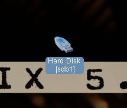
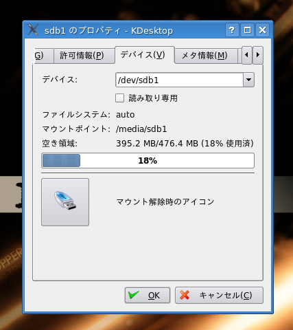
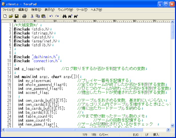
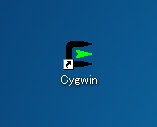
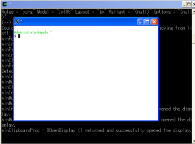

配布されている開発キットにはクライアントソフトウェアのソースコードが含まれています。ソースコードをコンパイルすることで、はじめてクライアントソフトウェアを動作させることができるようになります。
この章では、例としてC版のクライアントソフトウェアのソースコードを改良する方法を説明します。また、ソースコードをコンパイルする方法と、サーバを起動して動作チェックを行う方法について説明します。JAVA版に関しては別紙を参照ください。
配布されている開発キットにはクライアントソフトウェアのソースコードが含まれています。ソースコードをコンパイルすることで、はじめてクライアントソフトウェアを動作させることができるようになります。
この章では、例としてC版のクライアントソフトウェアのソースコードを改良する方法を説明します。また、ソースコードをコンパイルする方法と、サーバを起動して動作チェックを行う方法について説明します。JAVA版に関しては別紙を参照ください。
実際の改良に先だって、少々の準備作業が必要になります。cygwin を使う場合と、knoppix を使う場合はこの節の情報が役に立つはずです。それ以外の環境の場合は、開発キットに付属のドキュメントをご参照ください。
cygwin の場合は基本的な準備は完了しています。クライアント・プログラムのソースコードを編集するためには適当なテキストエディタが必要なので、お好きな物を用意しておいてください。もしこれからテキストエディタを用意するなら、terapad がおすすめです。無料で使用することができます。入手方法は検索エンジンで検索すれば、すぐに配布元サイトがみつかります。
knoppix の場合はデータの保存にUSB メモリを使用するので少々準備に手間取ります。以下の項目を良く読んで作業を進めてください。
knoppix のDVD からパソコンが起動したら、USB ポートに第5 章で準備したUSB メモリを刺してください。デスクトップ上に図6.1 のようなアイコンが表示されるので、右クリックして「プロパティ」を選択してください。

図6.1 ： USBメモリをパソコンに指すと、アイコンが出てきます
するとデバイスの設定ウインドウが表示されます。「デバイス」タブをクリックし、「読み取り専用」のチェックをはずして「OK」をクリックしましょう（図6.2参照）。

図6.2 ： knoppix で USBメモリをマウントします
完了したら同じアイコンを再び右クリックし、「マウント」をクリックしてください。これでUSB メモリの準備は完了です。
画面下に表示されているバーの一番左に用意されたKDE ボタン、システム、ターミナルの順番でクリックしていくと、コンソールが起動します。knoppix の操作は基本的にターミナルを使うのが便利です。
ターミナルが開いたら、USB メモリ内の開発キットを解凍しましょう。一般的にUSB メモリのルートは/media/sda1 です。解凍にはtar コマンドを使います。コマンドラインオプションとしてxvzf を与えておきましょう。
入力するコマンドをまとめると次のようになります（ファイル名の20061018 の部分は開発キットのバージョンが入ります。仮に20061020 版であれば、二行目の20061018 の部分を20061020 に変更してください）。
$ cd /media/sda1 $ tar xzvf tndhm_devkit20061018.tar.gz
ちなみに、上のコマンドでは$を入力する必要はありませんので注意してください。解凍が完了するとdaihinmin というディレクトリが出来上がるはずです。
この節ではクライアント・プログラムの改良方法について解説します。あくまでも、どのような方法でソースコードを書き換えればよいかを説明するだけです。つまり、改良の方針については触れません。
第5 章でコピーしたdaihinmin というフォルダ内のclient というフォルダを開いてください。するとclient.c というファイルが存在しているはずです。このファイルをお好みのテキストエディタで開けば、すぐに自分のアイデアをクライアント・プログラムに盛り込むことが（クライアント・プログラムの改良に取り掛かることが）できます（図6.3参照）

図6.3 ： client.c がソースコードです。適当なエディタで編集してください
（画像をクリックで大きい図）
具体的にどのファイルがどの機能を担当しているかについては、client フォルダに同封されたドキュメントや、本マニュアルの第9 章をご覧ください。
先ほど表示させたターミナルを使って、クライアント・プログラムのソースコードが保存されたディレクトリに移動しましょう。場所はfUSBメモリのルートディレクトリg/daihinmin/client/以下にあります。このディレクトリの中にあるソースコードを編集すれば、クライアント・プログラムの改良を行うことができます。編集に使うコマンド（エディタ） はemacsが便利です。
ターミナルに入力するコマンドは次のようになります。
$ cd /media/sda1/daihinmin/client $ emacs client.c &
ちなみに、上のコマンドでは$を入力する必要はありませんので注意してください。emacs をつかって、開発キットに同梱されたクライアント・プログラムをどんどん改良してください。
emacs の使い方は、web 上にたくさんのドキュメントがあります。検索エンジンで「emacs 使い方」などと検索してみてください。
次のファイルが client/ 内にあることを確認してください。ないときはダウ ンロードや圧縮ファイルの解凍を失敗している可能性があるので、作業をや り直してください。
Makefile.in connection.c daihinmin.h client.c connection.h main.c configure* daihinmin.c
コンソール上で client/ に移動し、次のコマンドを実行するとクライアント プログラムがコンパイルされます。
$ ./configure $ make
注意:$はコマンドプロンプトを意味していますので、$ は入力しないでください。
コンパイルが正常に終了すると、新たに次のファイルが生成されます。 client（cygwin の場合は client.exe)が実行ファイルです。
client client.o connection.o daihinmin.o
エラーがでたときは、コンパイルに失敗しているので、次のことを試してください。
$ make clean $ make
ソースファイルを改変した場合は、
$ makeと打てばコンパイルがされます。
knoppix を使って開発する場合は気をつけていただきたい点があります。knoppix にはCD 版とDVD 版がありますが、開発環境の都合上DVD版を使います。お使いのパソコンでDVDを書き込めない場合はご連絡ください。連絡先は
 です。CD 版で動作させるために必要なファイルと説明をさせていただきます。
です。CD 版で動作させるために必要なファイルと説明をさせていただきます。
動作チェックを行うには、サーバー・プログラムを使用する必要があります。実際に通信をおこなわせて、動作を確認する必要があるからです。
動作チェックを行う前に、サーバー・プログラムのコンパイルを行う必要があります。サーバー・プログラムのコンパイルを行うには、Cygwin をインストールしたときにデスクトップ上に作成された図6.4 のアイコンをダブルクリックしてください。

図6.4 ： cygwin のアイコンをダブルクリックして下さい
するとコマンドラインプロンプトが表示されますので、以下のように入力してください。
$ cd ~/daihinmin/server $ ./configure $ cd src $ make clean $ make
これでとりあえずの準備は完了です。
サーバーソフトウェアをはじめて実行するときは、クライアントソフトウェアと同様にコンパイルを行う必要があります。サーバーソフトウェアのコンパイルは次のコマンドを実行すればOKです。
$ cd /media/sda1/daihinmin/server $ ./configure $ make clean $ make
コマンドを入力するときは$を入力する必要はありません。特に問題なくコンパイルが完了するはずですが、なにかエラーが出た場合は 
 までメールでお問い合わせください。
までメールでお問い合わせください。
サーバーソフトウェアの準備についての詳しい情報は、INSTALL.txtをお読みください。詳しい解説が準備されています。
先ほどと同様に、デスクトップ上の cygwin.exe というアイコンをダブルクリックしてコマンドラインプロンプトを起動してください。ここで次のコマンドを入力します。
$ startxwin.sh
すると図6.5 のようなコマンドラインプロンプトが表示されるはずです。

図6.5 ： cygwin のコマンドプロント
（画像をクリックで大きい図）
バックグラウンドカラーが白のコマンドラインプロンプトが起動したら、以下のコマンドを入力してください。
$ cd /media/sda1/daihinmin/server/src $ ./tndhms.exe &
これでサーバー・プログラムの起動は完了です。詳しい使い方については第 8 章をお読みください。
ターミナルに以下のコマンドを実行するとサーバー・プログラムが起動します。
$ cd /media/sda1/daihinmin/server/src $ ./tndhms &
サーバー・プログラムの使い方はこのマニュアルの 8 章に書いてありますので、ぜひお読みください。
コンパイルしてできた client あるいは client.exe が実行ファイルです。 この実行ファイルは次のような形式で実行できます。
$ ./client [-h server_adress] [-p port] [-n user_name]
-h server_adress : サーバが起動しているコンピュータのIPアドレス(IPv4)を指定します。
省略すると 127.0.0.1 が指定されます。
-p port : サーバが接続を持ち受けているポート番号を指定します。
省略すると 42485 が指定されます。
-n user_name : サーバに通知するクライアント名を指定します。
半角英数字のみ使用可能で、15文字まで送信しますが、
サーバ側で表示されるのは8字程度になります。
省略すると、default が指定されます。
たとえば、サーバが同じコンピュータの42485ポートで待ち受けているときに、 クライアント名と default とする場合、次のように実行します。
$ ./client -h 127.0.0.1 -p 42485 -n default
これは次の様に省略した場合と同じ設定となります。
$ ./client
また、下記のように任意のものだけ指定することもできます。 この例はクライアント名を client01 と指定しています。
$ ./client -n client01
クライアントを5つ同時に起動する場合、
$ ./client &
のように最後に&(アンパサント)をつけると、クライアントがバックグラウン ドで実行されるので、5つ続けて同時に起動できます。
注意:クライアントを起動する前に、サーバが起動しておく必要があります。
クライアントの改良には、現在の標準クライアントがどのようにつくられているかを知らなければなりません。詳しい情報は9章にありますので、一度読むことをおすすめします。
また、サーバーとクライアントの間では通信が行われますが、その通信手順は7章で解説しています。
[UECda] → [UECda-2010] → [マニュアル目次] → [クライアントの改良、コンパイル、実行]
{kind=link}
{kind=link}